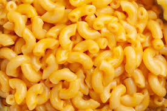

Mac and Cheese

A delicious recipe for mac and cheese. Perfect for summer cookouts! Enjoy the tasty flavors and al dente pasta.
Ingredients
- 1 (8 ounce) package elbow macaroni
- 1 cup dry bread crumbs
- 1/4 cup butter, melted
- 1 (12 ounce) container small curd cottage cheese
- 1 (8 ounce) package shredded sharp Cheddar cheese
- 1 (8 ounce) container sour cream
- 1/4 cup grated Parmesan cheese
- salt and pepper to taste
Steps
- Preheat the oven to 350 degrees F (175 degrees C). Grease a 9x13-inch baking dish.
- Bring a large pot of lightly salted water to a boil. Cook elbow macaroni in the boiling water, stirring occasionally, until tender yet firm to the bite, about 8 minutes. Drain.
- Mix bread crumbs and melted butter together in a small bowl.
- Transfer drained macaroni to the prepared baking dish. Add cottage cheese, Cheddar, sour cream, Parmesan, salt, and pepper; stir until well combined. Sprinkle bread crumb mixture over top.
- Bake in the preheated oven until golden brown on top, 30 to 35 minutes.
Back To Home